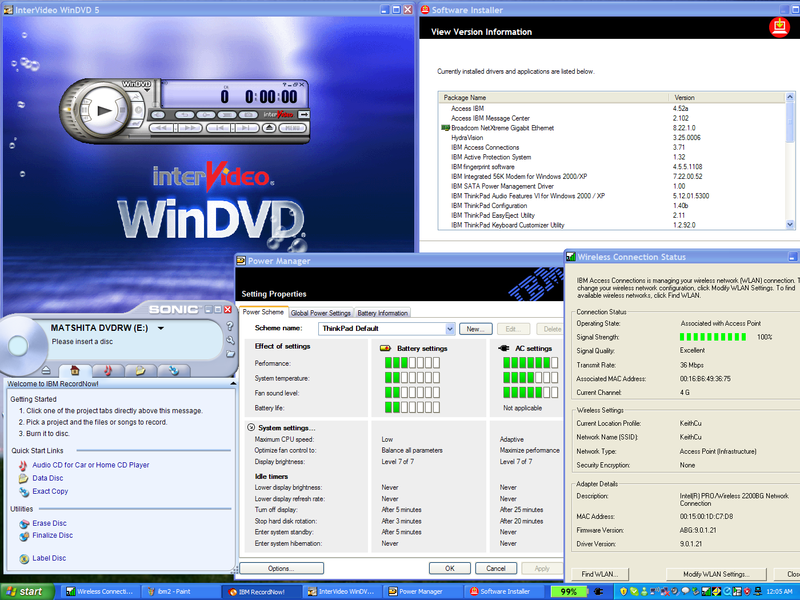

Here are the reasons Linux is superior to the Windows kernel:
Here is a diagram of the Linux kernel:
Layers of the Linux kernel “onion”. The Linux kernel is 50% device drivers, and 25% CPU-specific code. The two inner layers are very generic.
Notice that it is built as an onion and is comprised of many discrete components. The outermost layer of the diagram is device drivers, which is 50% of the code, and more than 75% of its code is hardware-specific. The Microsoft Windows NT kernel diagram, shown several pages back, puts all the device drivers into a little box in the lower left-hand corner, illustrating the difference between theory and reality. In fact, if Microsoft had drawn the kernel mode drivers box as 50% of the Windows NT diagram, they might have understood how a kernel is mostly hardware-specific code, and reconsidered whether it was a business they wanted to get into.
Refactoring (smoothing, refining, simplifying, polishing) is done continuously in Linux. If many drivers have similar tasks, duplicate logic can be pulled out and put into a new subsystem that can then be used by all drivers. In many cases, it isn't clear until a lot of code is written, that this new subsystem is even worthwhile. There are a number of components in the Linux kernel that evolved out of duplicate logic in multiple places. This flexible but practical approach to writing software has led Linus Torvalds to describe Linux as “Evolution, not Intelligent Design.”
One could argue that evolution is a sign of bad design, but evolution of Linux only happens when there is a need unmet by the current software. Linux initially supported only the Intel 80386 processor because that was what Linus owned. Linux evolved, via the work of many programmers, to support additional processors —more than Windows, and more than any other operating system ever has.
There is also a virtuous cycle here: the more code gets refactored, the less likely it is that a code change will cause a regression; the more code changes don't cause regressions, the more code can be refactored. You can think about this virtuous cycle two different ways: clean code will lead to even cleaner code, and the cleaner the code, the easier it is for the system to evolve, yet still be stable. Andrew Morton has said that the Linux codebase is steadily improving in quality, even as it has tripled in size.
Greg Kroah-Hartman, maintainer of the USB subsystem in Linux, has told me that as USB hardware design has evolved from version 1.0 to 1.1 to 2.0 over the last decade, the device drivers and internal kernel architecture have also dramatically changed. Because all of the drivers live within the kernel, when the architecture is altered to support the new hardware requirements, the drivers can be adjusted at the same time.
Microsoft doesn't have a single tree with all the device drivers. Because many hardware companies have their own drivers floating around, Microsoft is obligated to keep the old architecture around so that old code will still run. This increases the size and complexity of the Windows kernel, slows down its development, and in some cases reveals bugs or design flaws that can't even be fixed. These backward compatibility constraints are one of the biggest reasons Windows takes years to ship. The problem exists not just at the driver layer, but up the entire software stack. When code isn't freely available and in one place, it makes it hard to evolve. Microsoft has accumulated so much baggage over the years that it could be an airline.
While the internal logic of Linux has evolved a lot in the last ten years, the external programmer interfaces have remained constant. The key to a stable interface is incorporating the right abstractions. One of the best abstractions that Linux adopted from Unix is the file abstraction. In order to perform almost any function on a Linux computer, from reading a web page on a remote website to downloading a picture from a camera, it is necessary to simply use the standard file commands: open and close, read and write.
On my computer, in order to read the temperature of the CPU, I just need to open the (virtual) text file “/proc/acpi/thermal_zone/THM0/temperature” and the data I request is inside:2
temperature: 49 C
In essence, the Linux kernel is a bundle of device drivers that communicate with hardware and reveal themselves as a file system. As new features, security issues, hardware requirements and scenarios confront the Linux kernel, the internal design evolves and improves, but the file system abstraction allows code outside the kernel to remain unchanged over longer periods of time.
Here is a random sample of the change log of the Linux kernel from 2.6.14. As you can see, it is filled with all kinds of cleanup and bugfix work:
spinlock consolidation
fix numa caused compile warnings
ntfs build fix
i8042 - use kzalloc instead of kcalloc
clean up whitespace and formatting in drivers/char/keyboard.c
s3c2410_wdt.c-state_warning.patch
[SCSI] Fix SCSI module removal/device add race
[SCSI] qla2xxx: use wwn_to_u64() transport helper
[SPARC64]: Fix mask formation in tomatillo_wsync_handler()
[ARCNET]: Fix return value from arcnet_send_packet().
Many of the Linux kernel's code changes are polish and cleanup. Clean code is more reliable and maintainable, and reflects the pride of the free software community.
If you look at the code changes required to make a bugfix, in the vast majority of cases all that is needed is a revision of a few lines of code in a small number of files. A general guideline Linux has for bugfixes is this: if you can't look at the code change and prove to yourself that it fixes the problem, then perhaps the underlying code is confused, and this fix shouldn't be added near the end of a release cycle.
According to Stanford University researchers , the Linux kernel has 0.17 bugs per 1,000 lines of code, 150 times less than average commercial code containing 20-30 bugs per 1,000 lines.3 Microsoft's Windows bug databases aren't available on the Internet so it is impossible to make comparisons, but even if Linux isn't more reliable already, it is setup to become so because the code is simple, well-factored, and all in one place.
Within the free software community, different teams are disparate entities, and so the idea of arbitrarily moving code from one part of the system to another can't easily happen. Inside Microsoft there are no boundaries, and so code is moved around for short-term performance gains at the cost of extra complexity.
Here is a graph of all the function calls into the OS required to return a simple web request. These pictures demonstrate a visual difference in complexity that often exists between free and proprietary software:
System call graph in Microsoft's proprietary web server, IIS.
System call graph to return a picture in the free web server Apache.
Linux engineers have found a way to run the same codebase on a wide variety of processors, on devices from cellphones to supercomputers, an unprecedented achievement. Linux has been tuned to first, run correctly, and then run efficiently on two, four, eight, and now 1,000 processor machines. Software has infinite malleability, so such a universal kernel has always been possible — it just took a bunch of different hardware companies working together to make it happen.
Putting everything into one codebase helps reliability. Running the Linux kernel on a 32-processor computer shakes out multi-threaded bugs far more quickly than on a two-processor laptop. Running on low-end machines keeps the code small and simple, which makes it run faster on desktops. Features that first appear on laptops and tablets eventually trickle their way down to even smaller devices where the code undergoes even more testing and enhancement. The many hardware and server developers who want extreme reliability ensure that the kernel on my PC is as reliable as Linux's most demanding customer.
Linux is more flexible than the Windows NT kernel, though both are very clean and flexible. For example, the National Security Agency (NSA) has created a free software component called SELinux (Security Enhancements to Linux) that adds a strong security enforcement mechanism known as Mandatory Access Control.4 Making these mechanisms public helps ensure there are no back doors to the NSA's computers. I will discuss in a later chapter why governments can adopt free software, even for high-security scenarios, but it appears the NSA already understands this concept.
Throughout the Linux world, one has many more choices for just the right tool to do the job. Some might argue that too much choice is a bad thing, but creating many components forces clear boundaries, and survival of the fittest whittles down the inferior choices over time.
Microsoft had a motto: “Ship early, ship often.” This philosophy is wise for software development because it forces teams to maintain a high-quality product every day, and the earlier you release, the sooner you can receive and incorporate feedback.
However, this philosophy only works when adopted. Unfortunately, Microsoft's two biggest products, Windows and Office, do not follow this philosophy. Of course, paying $240 every year for the latest upgrade to Windows “Ultimate” wouldn't be acceptable either!
The Linux kernel ships every three months. For a product of its size and complexity, Linux's rate of shipment is unprecedented. This pace has allowed the Linux kernel to ship drivers before Windows, and even before the hardware itself has shipped. Linux supported USB 3.0 before Microsoft, which did not include it in Windows 7. Because Linux is constantly near shipping, you can take any random build from Linus' computer, put it into a rocket and feel quite confident that it won't crash.
A big part of the Department of Justice lawsuit against Microsoft focused on the company's bundling of many software components with their operating system. The government accused Microsoft of excluding third-party software developers and stifling competition. But Microsoft's tying has been both a blessing and a curse.
The blessing is that by having the pieces work together, they can reuse code and be more integrated. The curse is that Microsoft has created a situation whereby it revises and adds new features to all of its interdependent components at the same time. As a consequence, its components take years to stabilize, and you can't ship until the last component is ready.5
By contrast, in a free OS, software components depend only on released versions. Every team doesn't try to ship on the same day, so the OS contains the latest versions of all released components.6 Separate development organizations have enforced boundaries that have simplified dependencies, and allows everyone to move ahead at whatever pace they choose.
Many users wonder whether free software will ever be as good as proprietary software because presumably the free software guys can't afford things like usability studies. Having watched usability studies at Microsoft, grabbing people off the street to give their bits of feedback in a room with two-way mirrors is not necessary. The Internet, and all its communications mechanisms, provides a continuous and richer feedback mechanism than you can get with any usability study. In addition, usability studies don't matter if you can't incorporate the changes quickly and easily. With clean codebases and frequent ship cycles, usability will happen automatically. I've spent a lot of time using Linux and find many applications are perfectly usable.
Shipping a new platform every five years in theory provides Microsoft's partners a stable platform upon which to build. However, in reality, its results have flaws. For instance, I wasn't able to install an HP Photodesk 7960 printer driver on Windows Server 2003, although the driver installed perfectly on XP. The subtle and unintentionally undocumented differences between those operating systems, which shipped two years apart, has created compatibility headaches even on Microsoft's supposedly uniform platform.
It is much less expensive for hardware vendors to support Linux. If you want to build a device driver, a great place to start is by looking at existing shipping device drivers, an opportunity that Linux offers to everyone. A proprietary “Device Driver Toolkit” with its sample code is never as good as production code. Those expensive kits contain documentation, but not source code — so you sometimes have to guess at what is happening down below.
We find in Windows today that hardware manufacturers have duplicated a bunch of the functionality Windows provides but doesn't quite fit their needs. For example, IBM includes its own applet and status icon for wireless Internet, so Windows XP on IBM hardware has two. Presumably they weren't satisfied with the features Windows provided, and weren't able to fix them. And so they had to build new applets from scratch! This is also what gives Windows a feeling of a jumble of components slapped together.
Here are five of the 100 applets IBM adds to Windows:

Windows XP with 5 of IBM's 100 extra applets. Notice the large number of status icons on this almost-virgin installation.
Building all of these applets, designing multilingual user interfaces, providing the means to install and configure, etc. is ten times more work than merely writing the device driver, leveraging other shipping drivers, and uploading it to the official codebase.
My Photodesk 7960 printer worked on Windows XP, but didn't work on Windows Server 2003 because the installation code crashed — which HP shouldn't be forced to bother with in the first place.
Attempting to compare the security of operating systems is a complicated endeavor because there are an infinite number of risks. It is like asking whether one car is safer than another. Against what: Getting hit from the front? Rolling over? Having the gas tank pierced? Its ability to brake?
Furthermore, neither Windows nor Linux are perfectly secure operating systems; both are prone to buffer-overrun viruses, an issue I will discuss in the tools chapter. Furthermore, new threats appear over time, and so each nefarious advancement requires new logic to defend against it. Given these caveats, it is still possible to make some comparisons.
Some of the previous advantages of Linux, such as its simplicity, modularity, support for SELinux, etc. all help with its security. In addition, the nature of how Linux is developed also helps. A document commissioned by the US Military said:
Open source software is potentially subject to scrutiny by many eyes Therefore bugs, security flaws, and poor design cannot hide for long, at least when the software has a community of programmers to support it. And since fixing the code doesn't depend on a single vendor, patches are often distributed much more rapidly than patches to closed source software. Can increase code quality and security With closed source software, it's often difficult to evaluate the quality and security of the code. In addition, closed source software companies have an incentive to delay announcing security flaws or bugs in their product. Often this means that their customers don't learn of security flaws until weeks or months after the security exploit was known internally. —Open Technology Development RoadmapAnother big difference between Linux and Windows is that Linux was adapted from Unix, which had a multiuser design right from the beginning. In Windows, users have historically had full Administrator access to the machine, including the ability to overwrite system files. When the computer is attacked by a virus, the virus can gain the same capabilities as the user and thereby hide itself inside system files, which make it very difficult to remove. On Linux, I can write only to my own files and have read-only access to all others. Linux's multiuser nature, and therefore its focus on minimal permissions, minimizes any damage.
One study found that there are about 60,000 known viruses for Windows, and only about 40 for Linux. Another study by Evans Data showed that 8% of Linux developers say their machines have been infected by malicious code, compared to 60% of Windows machines.
Brian Krebs of the Washington Post found that code to exploit flaws in Internet Explorer 6 existed for 284 days in 2006, while Firefox was at risk for just 9. Computer security expert Bruce Schneier recommended in December 2004 that people not run Internet Explorer. Some argue that Linux and Firefox have fewer viruses because they have fewer users, but Apache is well-respected for its security.
For most of my tenure at Microsoft, we worried about features, reliability, and performance, not security. Microsoft's Chief Research and Strategy Officer, Craig Mundie, said in 2002:
Many of the products we designed in the past have been less secure than they could have been because we were designing with features in mind rather than security.Microsoft has greatly increased its focus on security in the past few years, and I am sure the security of every product improves with every release, but the baggage of their codebases serve as an ongoing impediment.
Having browsed through the sources to a number of Linux applications, one can say the free codebases are typically cleaner than their Windows counterparts, which makes them easier to secure. The default server-oriented Debian 4.0 Linux distribution requires a mere 170MB of disk space, whereas Windows Server 2003 requires 3 GB. All other things being equal, the fact that Debian is 17 times smaller means it will be more secure. The free database MySQL is a mere 26MB download; the code is clean and small, and therefore much more likely to be reliable and secure.
Another advantage of Linux is that all the applications in a Linux operating system receive security updates. In the Microsoft world, only Microsoft's code is protected by Windows Update.
While Linux is free to acquire, it can also be cheaper to run and maintain than Windows because of its better security. The city of Manchester in England spent $2 million in 2009 to remove the Conficker worm from their computers.
While the Windows NT kernel was state of the art at the time it was released in 1993, most of its good ideas have been learned well and absorbed, in spite of the fact that the code has never been released.
For example, the Linux kernel supports asynchronous I/O (input/output), an innovative way to do reads and writes without tying up “thread” resources. This was an innovation first made widespread in Windows NT.
The ability to load code dynamically is another important feature the Linux kernel adopted from NT and others. Plug and play and suspend and hibernate was a collaboration between Microsoft and hardware companies in the 1990s, and Linux now supports this feature.
Throughout the free software stack, developers have incorporated good ideas from the outside world. There is no Not Invented Here syndrome in free software; a good idea is a good idea, and existing code is even better. In software today, the biggest impediment to sharing ideas is not ego, but license agreements.
The Linux kernel has even learned from Microsoft's mistakes. For example, one feature added to the Windows NT 4.0 kernel was to put the code that draws widgets into the kernel itself. While this can improve graphics performance, it also means that a bug in the code of a button has the capacity to crash the entire system. The best way to keep a system secure and reliable is to keep as much code as possible in user mode above the kernel, and Linux follows this strategy.7